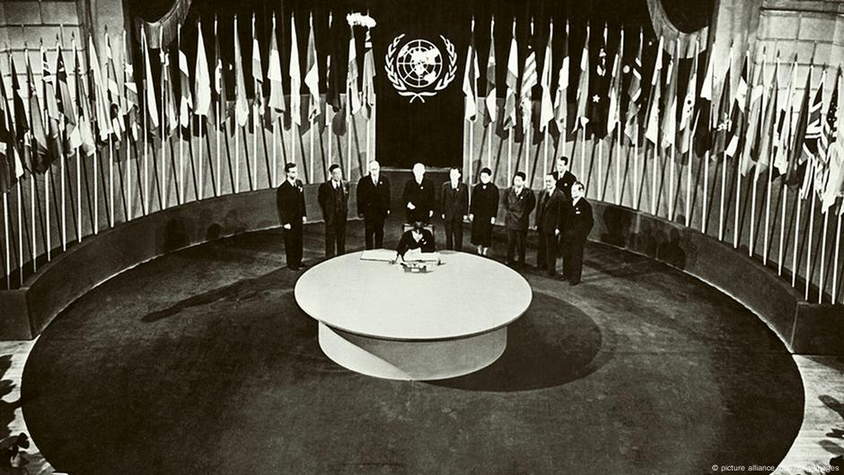

A Alemanha não foi declarada culpada da guerra, como no conflito anterior, porém passou por um profundo processo de depuração ideológica. Além disso, teve seu território dividido entre a Alemanha Oriental, vinculada ideologicamente à União Soviética, e a Alemanha Ocidental, próxima dos países ocidentais.
Os países europeus se encontravam destruídos e com sua população reduzida. Somente com a ajuda americana, através do Plano Marshall, foi possível a reconstrução da Europa Ocidental. Também foi concretizada a criação de um fórum internacional, a Organização das Nações Unidas (ONU), que seria um instrumento diplomático entre as nações para evitar a guerra. 
Primeira asembléia geral da ONU
Um dos principais vencedores do conflito foi os Estados Unidos, que tiveram somente o território do Havaí atacado e tiveram perdas econômicas muito menores que os europeus. A impressionante vitória soviética também alçou o país à condição de potência mundial.
A Europa também foi dividida em dois blocos econômicos consoante o país que libertou e ocupou as nações. Países do leste europeu como Polônia, Hungria e Romênia passaram a sofrer influência da União Soviética e construíram governos de caráter socialista. Já países como França, Bélgica e Holanda, se viram ocupadas pelos Estados Unidos e inauguram a época do Estado de Bem-Estar Social.
Após o final da guerra, inicia-se um confronto entre as duas ideologias marcou o mundo inteiro e foi conhecido como Guerra Fria, uma disputa entre os Estados Unidos da América e a URSS.